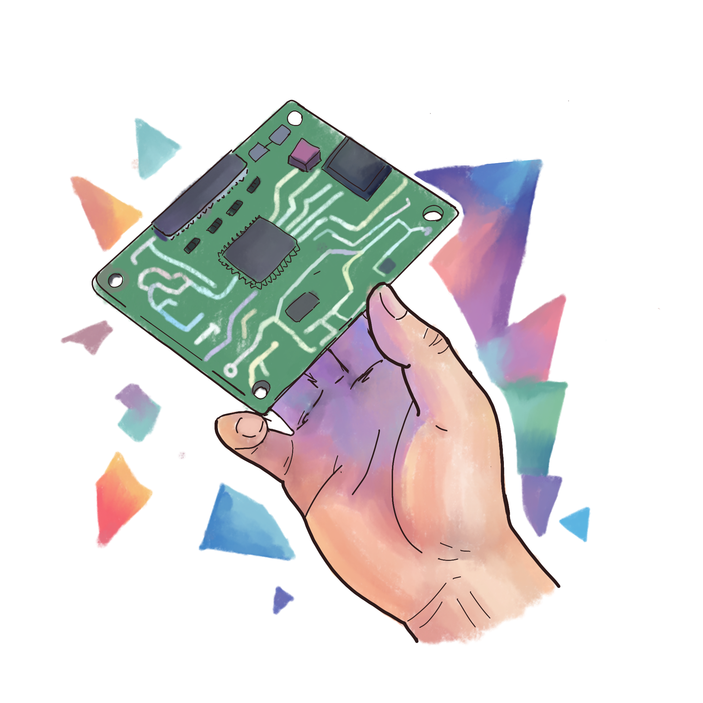
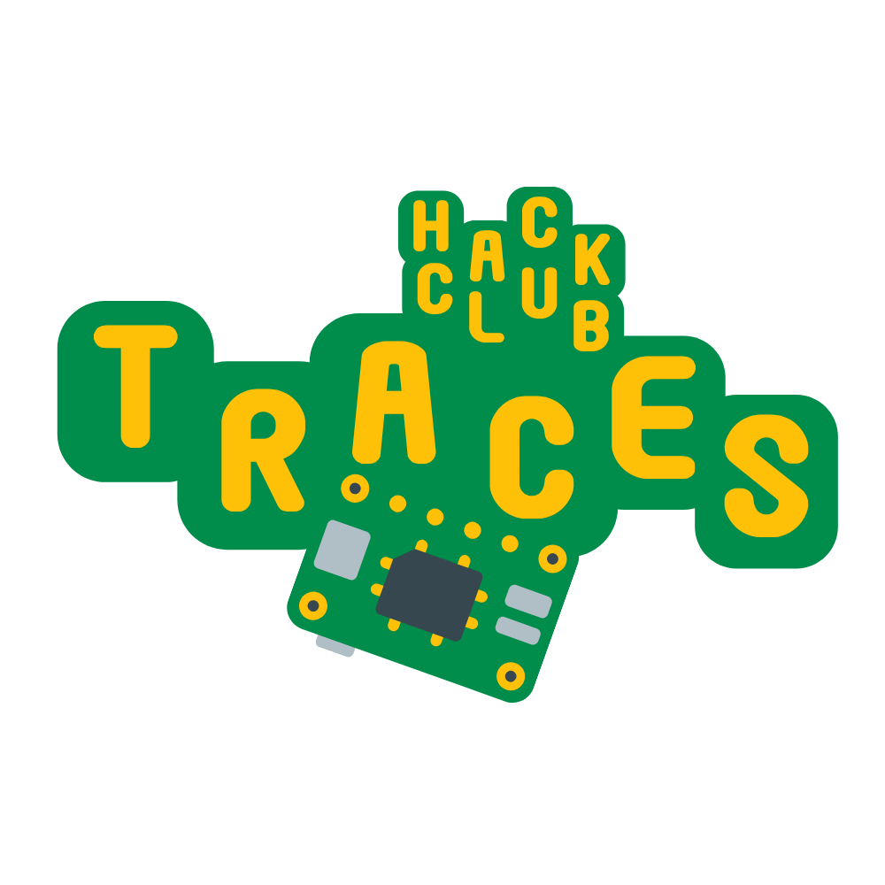

Traces is a you ship, we ship program for Hack Clubs: follow the guide, design and simulate real circuits in Wokwi, add your own components, and we'll grant you the parts to build it for real. No breadboard required to get started — just a browser and an idea.
Most YSWS programs ship you a kit and say good luck. Traces is different — follow the guide, learn circuit design in Wokwi, then add your own components and we'll grant you the real parts to build it in the physical world.
Everything starts in Wokwi, a free in-browser simulator for Arduino, ESP32, Raspberry Pi Pico, and more. Wire up resistors, sensors, displays and microcontrollers, hit run, and watch the simulation light up. Mess it up? Undo and try again, nothing actually smokes up. Once you ship a project with your own custom components, we send you the hardware to build it for real.

There's one guide, but where you take it is up to you. Work through it solo or with your club, then add your own twist — extra components, sensors, whatever you can dream up in Wokwi. Ship it, and we'll fund the parts to bring it off the screen.
Open the Traces guide and work through the steps in Wokwi. Learn schematics, code, and debugging, all in the browser.
Take the base circuit and add your own components — a sensor, a display, a motor. Experiment freely, nothing burns out.
Submit your finished circuit like any other YSWS. Show us what you built and what parts it needs.
Approved? We send you a grant to buy the real components so you can build it for real.

Open the guide, build something in Wokwi, add your own twist, and ship it. If it's solid, we'll grant you the parts to build it for real.
already running a club? say hi in #traces on Slack · start a Hack Club →